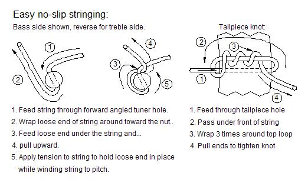

Select your area of interest:
Home* Lap Steel* 3 String Guitar* "Regular" Guitar* Violin* Bass*Banjo* Mandolin* Ukulele* Home Recording* Links
Open Back Banjo:
Traditional & progressive design & construction information
Boucher Early Minstrel Banjo (construction guide on CD & full size plan available)Frank Profitt Mountain Banjo
Bluestem Mountain Banjo Nouveau
Bluestem Artisan Mountain Banjo
Bluestem Open Back Banjo Nouveau
Bluestem Wine Box / Hand Drum Banjo
Open Back Banjo Design Primer
General Banjo Construction Information
Open Back Banjo Setup Guide
“Why can’t I get this thing to play in tune?” (more than you wanted to know about equal temperament)
Bluestem Open Back Banjo (construction guide on CD & full size plan available)
Bluestem Workingpersons 11 Slot Head Open Back Banjo (construction guide on CD & full size plan available)
Bluestem Wood Top Banjo Information (full size plan available)
*****************************************
Open Back Banjo Setup Guide
OK, I’ve got me an open back banjo. How do I check to see if it is adjusted or set up correctly?A reasonable question to ask, so the following information is presented as a way of better understanding the instrument we know as the banjo and perhaps shedding a little light on how to set it up in a manner that we can live with. Here’s a list of items arranged in the sequential order in which they should be addressed for proper setup:
Open Back Banjo Anatomy Diagram
Head tension
String type and gauge
Proper string slot depth at the nut
Proper string height over upper frets
Bridge height
Proper neck Angle
Neck attachment to the rim
Stringing
Neck relief
Tailpiece adjustment
Determining Scale length
Setting intonation
Compensated Bridges
Final comment on tuning problems
Open Back Banjo Anatomy Diagram

Here is a diagram to help in referring to your banjo's various parts in the correct manner.
Head tension
The majority of banjos have a membrane head of real skin or a synthetic material that requires tensioning to serve as a firm base for the bridge to rest upon and function as the primary surface from which string vibrations are coupled to the surrounding air. An acceptable tone requires the head to be properly tensioned and also needs to be tight enough to cause a minimal amount of deflection when the bridge bears upon it. The amount of sag across the head is generally 1/16” to 1/8” at the bridge location when the strings are at correct tension. Many players adjust so the head takes firm thumb pressure at the bridge location to deflect it further.There are mechanical devices such as a torque wrench for the nuts that tension the head or a mechanical device for measuring the actual head tension. These can be useful for repeating a desired setup, but usually fail to be the ultimate solution that they claim to be. There are so many interacting variables that affect banjo tone that simply repeating someone else’s tension measurement will not result in the same tone. Unfortunately the best solution to finding the correct head tension for your individual banjo still boils down to trial and error.
Head tension adjustment should always start with a visual check of the head to make sure it is initially leveled across the pot assembly and not pulled down too far over one side of the rim. The head should then be tensioned fairly tight, with a good point of referance being that the bridge feet aren't noticibly sunk into the surface of the head. Another way of checking the initial tension is to examine the top plane of the head at the bridge location. The area under the bridge feet should be no more than 1/8" below the plane of the head. Head tension can be increased a little at a time until it becomes obvious that no further improvement in tone is being achieved with further increase in tension. In many cases too high of head tension will also result in a tone being described generally as “choked off”. Backing the tension down a bit should relieve this condition as the head returns to its optimal tension. Clawhammer players sometimes prefer the head a bit looser for a fuller tone with more bottom and to take off a little of the top end edge, while Bluegrass players tend to like a really tight head to increase the "crack" that is produced when driven by picks. Each banjo reacts differently to head tension, so it really boils down to an individual choice based on the player’s likes and the instrument being played.
Many players also use some form of tap tuning. This involves looking for a specific pitch that can be repeated for each area of the head directly above each tensioning point. The head is lightly tapped and the tension increased to achieve this pitch. I don’t utilize this method because I cannot discern pitch reliably enough to judge its merit or usefulness. A search of the archived topics at Banjohangout.org will lead to a lot of opinions regarding tap tuning. I’m not sure there is a consensus on any one particular way of doing it.
That said, the "Steve Davis straight edge and coin" gets a lot of love on Banjohangout.org, so it's probably a good starting place if you're unsure about the correct amount of tension to apply. You can do a search and find long topic threads about it, here's a link that will display one such example from the Banjo Hangout Archives:
Steve Davis "Coin and Straightedge" method of checking and setting correct head tension
String type and gauge
String type can be generally divided into steel strings and synthetic strings. Some players still prefer the sound of actual gut strings instead of synthetic materials, but this isn’t all that common. Steel strings are by far the most commonly found, but the upsurge in popularity of fretless instruments has brought with it an increase in the number of players that are using synthetic strings on fretless and fretted instruments.String gauge can be important in determining tone and ease of action. The majority of players start with medium gauge strings and modify their gauge preference based on their style of play. Harder playing with high action sometimes dictates heavier string gauges while light playing in a more melodic style is often accompanied by the use of lighter gauges and lower action. Banjos with non-reinforced necks or without an adjustable rod generally require light gauge strings if steel strings are used. This prevents unnecessary strain on the neck which can cause forward bow in the neck and can damage a neck that was not designed for the higher tension of steel strings.
As related to setup, both string types affect the banjo in more or less the same way. In order to proceed with proper setup the desired string type and gauge should be selected and the strings brought to pitch using the preferred tuning, as changes in tension as a result of using different tunings will affect the playing action somewhat. It’s good to start from an initial baseline.
Proper string slot depth at the nut

The depth of the nut slots should be such that when a tuned string is depressed at the third fret a tiny amount of clearance is present between the first fret and the depressed string. This should be no more than the thickness of a single sheet of paper. All of the strings should have similar clearance. This is actually a very important setup point, as this minimal clearance results in easy playing action and facilitates the ability to properly intonate the string. When the string is depressed it is raised in pitch slightly because of the increase in the string tension as a result of being stretched by pressing it to the fret. It is important to minimize the distance that is required to press the string to the fret, but yet the clearance needs to be high enough to reduce the chance for string buzzing against a fret when the string is played aggresively in the open position.
The string slots for fretless banjo nuts should be of a depth that holds the string slightly above the finger board. The clearance should be no more than the thickness of a business card.
Proper string height over upper frets
Setting the string height over the upper frets contributes significantly to the overall playability of the instrument, and is sometimes referred to as “action adjustment”. The string height over the neck is a significant part of the total picture, but “action” refers to all adjustments that affect the playability of the instrument.String height over the upper frets is primarily a function of the neck heel angle. Some banjos allow a small amount of “up and down” movement at the heel, and this would ideally be the proper way to address the string clearance above the upper frets, but isn’t built into all instruments. In a perfect world all banjos would feature up and down adjustability of the heel to set the string height over the upper fret area of the neck.
A bit of detective work and banjo mechanics is often involved in adjustment of string height above the upper frets of many banjos.
The simplest way to modify string clearance over the upper frets is to change bridge height by swapping to the next shorter or taller bridge as necessary. This also effects tone and may not be a desirable solution in all cases.
Sometimes it’s necessary to shim the neck heel. This is done by cutting a thin but rigid shim from an appropriate material such as an old playing card and inserting it between the rim and the neck heel. Adding the shim at the top of the neck will decrease the distance between the strings and the upper frets. Adding the shim at the bottom of the heel will increase the distance between the strings and the upper frets. If done carefully, this is a nearly invisible solution to action adjustment problems. In severe cases the neck heel will need to be reshaped, but this is territory for a certified and licensed banjo mechanic. (No, there is no such thing!)
Some manufacturers recommend changing the action by the use of coordinator rod adjustment, but this is entering dangerous waters. It is never a good idea to introduce additional stress on the rim by purposefully flexing it. It is bad for any rim, is detrimental to the sound, and in worse case scenario can physically damage the rim. It’s a good selling point for a maker to claim “adjustability”, but generally not a good idea.
Some open back banjos are designed with an adjustable bracket at the end of the dowel stick. These are designed to produce a limited range of neck angle adjustment to raise or lower the strings over the upper frets. This system works best on thin rimmed banjos as the rim is more easily distorted or flexed by the repositioning of the end of the dowel stick. This system has little effect on a solidly constructed block rim, so the repositioning of the dowel stick end is not generally recommended on that type of rim.
Bridge height
The bridge height needs to be appropriate to allow about 1/8” of clearance between the strings and the top of the last fret on the fret board. Most generally the bridge will be 5/8” or 3/4” tall. More on this later.Proper neck angle
Modification of the neck angle is beyond the scope of this article, but we’ll assume that the neck angle was set correctly when the banjo as manufactured. The neck angle is determined by the angled cut of the neck heel and generally requires no modification. Most banjos are constructed in a way that prohibits the neck from being raised or lowered at the heel for action adjustment, so we can generally say that the neck angle is OK if sufficient clearance (approximately 1/8” between the top of the last fret and the bottom of the string) when a 5/8” or 3/4” bridge is used. The distance between the strings and the top surface of the head can be anywhere from 3/8” to 5/8” depending on how the instrument is made. If the neck angle is grossly in error then very thin shim material can be placed at the top or bottom edge of the heel to adjust it. Shim stock can be cut from a solid flexible material such as a playing card or thin wood veneer. This should be done as a last resort, as it is preferable to re-shape the heel in this case. That is an operation beyond the abilities of many and should be done by a competent banjo mechanic if it is needed.Note that the use of coordinator rods is not a good method to adjust action on a banjo equipped with them. If the rods are used to adjust neck angle then the overall tone of the instrument can be negatively affected. In extreme cases their improper use can damage the rim.
Neck attachment to the rim
There are various methods of attaching the neck to the rim, but in all cases should result in a firm mechanical coupling between the heel and the rim. The attachment hardware should always be checked for tightness before any additional steps are taken to setup the instrument properly. Banjos equipped with coordinator rods should be adjusted to exert no additional strain on the rim when they are tightened. This will deform the rim, possibly damaging it, and negatively affect tone.Stringing

The diagram above should be more or less self-explanatory as to the proper method to install strings so they don't slip when tightened.
Neck relief

If an adjustable truss rod is present on the instrument it is used to adjust for proper neck relief and should not be used for action adjustment. A brief explanation of the term “neck relief” is in order here so you will understand how and why it is adjusted.
When you evaluate the physics behind the banjo you'll find that the string is only straight when at rest. It forms itself into a rather lovely elliptical bow when plucked which can create the need for neck relief. In theory the very slight forward (concave) bow of the neck is added to more closely mirror the natural bow of the string's motion, allowing lower action adjustment before string buzzing against the frets becomes a problem. If an instrument’s neck is made so the tops of the frets are perfectly level then a very slight forward bow will naturally occur with the addition of string tension pulling upon it. Depending on how resistant the neck is to this force the bow can be anything from almost indiscernible to easily detectable visually by sighting down the length of the neck. The builder can choose a variety of options to prevent excessive forward bow from becoming a problem. These options range from simply selecting wood that is naturally resistant to being bent from applied force and good construction practice to the use of double acting adjustable truss rod mechanisms designed to counteract excessive concave or convex neck bow. Convex or “back bow” is generally not seen unless a neck is improperly constructed to begin with, so the double acting rod is usually installed as an extra insurance measure against unusual conditions of stress within the neck should they occur.
The term “truss rod” is actually a bit of a misnomer when applied to the double acting rod found commonly used today. The original design of the truss rod mimicked the truss design seen used for bridge construction or the trusses used for the building of a roof. The best designs were installed in a curved channel within the neck. When the adjustment nut was tightened, pressure was applied to the apex of the curve located under the central portion of the neck. This works well, but also applies undesirable longitudinal force on the neck.
The double-acting truss rod, the most popular in use today, was created to exert corrective pressure in either direction on the neck without the negative effects of longitudinal force. The rod is usually installed with the adjustment nut accessible from the heel end of the neck, but is sometimes installed with the adjustment nut under a cover at the peg head face. It is adjusted so there is a very slight forward or concave bow in the surface of the neck.
Adjusting neck relief with a double-acting truss rod:
The slight convex bow purposefully added to the neck side profile is known as neck relief, and is best checked by applying a capo at the first fret, holding a string down at the last fret, and visually evaluating the gap between the bottom of the string and the top of the seventh fret. This is the area where the bow will naturally be at its greatest, and the gap should be no more than .015”. That’s about the thickness of two business cards. An extra piece of string of the appropriate gauge such as the third string can also be used as a gauge for adjusting this gap. A slight gap here is really all that’s needed, so it’s not necessary to get too anal over the exact gap.
Other forms of neck reinforcement are sometimes used to counteract the forces of string tension exerted upon the neck. These are most generally in the form of bars of metal or other composite material set into the body of the neck.
As a side note, it’s even debatable as to the general importance of neck relief and it is often considered unnecessary for clawhammer and other playing styles that are sometimes set up with higher action at the upper portion of the neck.
Tailpiece adjustment
Many players of open backs use a simple tailpiece like the ubiquitous “no knot”. These tailpieces are attached with a small bolt to the end bracket and are brought down to the point where they rest on the tension band and are tightened just to the point where they do not rattle or vibrate when the instrument is played. They are not adjustable and rely on the proper height of the bridge to achieve sufficient break angle from the bridge to the tailpiece. The break angle is important as it helps determine the down force on the head. All other things being equal, a taller bridge will result in additional down force with a corresponding increase in volume and high end presence. Conversely, a lower bridge reduces the down force, therefore lowering volume and decreasing the high end presence.Some players will install adjustable tailpieces to gain more control of their sound by gaining the ability to control the down force on the bridge. These will allow the same type of variance in tonality without the need to change to a bridge of a different height.
Determining Scale length

It is important to know the designed scale length for the determination of the initial bridge position. This is easy to determine by measuring the distance from the edge of the nut on the fret board side to the center of the twelfth fret. Multiplying this distance by two will give you the designed scale length of your instrument. You can place the bridge at this distance from the front edge of the nut as a starting point before moving on to intonation adjustment.
Fretless instruments have no particular scale if there are no indicators used on the finger board. It is then up to the player to position the bridge for a comfortable scale that produces the best sound. The bridge is usually positioned between 35 and 50% of the distance across the surface of the head when measured from the tailpiece end. Proffitt-style mountain banjos generally have the bridge positioned at the center of the membrane head.
Setting intonation
Intonation is the process of adjusting an instrument so the notes produced sound as close as possible to the notes it was designed to play. Intonation adjustment is necessary on any fretted instrument because as the string is depressed it is stretched slightly which causes the pitch to rise. The bridge position can be adjusted to minimize this deviation from the desired note pitch. Intonation adjustment for the banjo is relatively easy due to the movable bridge. It can also prove difficult due to factors such as the use of light strings and the resonant nature of the instrument itself. The head tension should be checked and tightened if necessary prior to setting the intonation. If the head is too loose it may react to the downward pressure which results from pressing the string down at the upper fret positions. This somewhat negates the stretching effect on the string and presents you with a moving target when attempting to set the intonation. The effect is slight, but everything counts.Prior to attempting intonation adjustment make certain that the bridge is placed at the correct hypothetical scale length. Measure the distance from the edge of the nut on the fret board side to the center of the twelfth fret and multiply this distance by two. This will give you the hypothetical designed scale length of your instrument. Place the bridge at this distance from the front edge of the nut as a starting point before moving on to the actual intonation adjustment procedure.
There are various methods for setting the correct bridge position to achieve good intonation, but using the open string harmonic at the 12th fret compared to the fretted note at the 12th fret is generally the easiest and most reliable. This method produces good results in the majority of cases. Some players prefer to use intonated or curved bridges, although they are positioned using the same procedure. I find it unnecessary to use anything other than the traditional straight bridge, YMMV.

Tune the banjo to your preferred tuning and adjust the bridge position by matching the twelfth fret harmonic with the note produced when the string is fretted at the twelfth fret and played on both the first and fourth strings. The twelfth fret harmonic is produced by very lightly touching the string at the twelfth fret position (don’t push down) and playing the note. When it’s done correctly the note produced will be 1 octave higher than the open string note.
If the fretted note is SHARP (HIGHER) when compared to the harmonic, the bridge is moved TOWARD the tail piece.
If the fretted note is FLAT (LOWER) when compared to the harmonic, the bridge is moved AWAY FROM the tail piece.
Repeat this procedure a few times alternating between the first and fourth string. The final bridge position may end up slightly slanted, but that’s perfectly acceptable.
You may want to place a couple of light pencil marks at this location to eliminate the need to re-measure this distance should the bridge slip out of place. This “ideal” position may need to be shifted slightly if string gauge or action is changed.
Note that there was no attention paid to the fifth string intonation. It is usually ignored because it is seldom fretted.
Compensated Bridges
In a world where most everyone comes with the baggage of having played guitar in the past it’s a natural conclusion to think that bridge compensation should be necessary for banjo, but banjo is a different animal and it does not fit into the same structure and category as a guitar. For starters, string tension is much lower on a banjo and that will greatly influence the need (or the lack thereof…) for compensation, but a much more important consideration is that the banjo (especially for open back clawhammer-style play) is often re-tuned to different notes for each string with different chord forms being used within those tunings. For guitar (or banjo for that matter) individual string compensation at the bridge works by modifying the string length so the note pitches will more closely align to the ideal note pitches representative of the equally tempered scale. That in itself is a true and noble cause, but it comes at a price for fretted instrument players.Ready for the big gotcha?
More “accurate” note pitches can be obtained by using compensated bridges, but more accurate notes don’t translate into purer note intervals and more harmonious note relationships within the chords of the key we are playing in. If this statement doesn’t make any sense to you it’s OK to skip ahead and read “Why can’t I get this thing to play in tune?”.
You’re back?
If you read and followed along with the explanation then you’ll realize that bridge compensation is designed to produce note pitches that are more in line with the western system of equal temperament, but those corrected notes won’t necessarily ensure that our instrument will actually sound any better. Purer note intervals and more harmonious note relationships within the chords of the key we play in are better implemented by sweetening the string pitches by ear once the instrument is “in tune”. You very often see a guitar player make slight B string adjustments depending on the key they are playing in; banjo players use the same process on different strings.
A compensated bridge can make a slight difference for sweetening notes IF you're a bluegrass player and always play in the same tuning, OR you play in a different style and don't re-tune often. It's not much of a benefit for anyone who plays in multiple tunings, and in that case a compensated bridge can actually exacerbate tuning problems because what sweetens a scale in one key will sour the notes of another key with a different tuning. Now you can see why compensated bridges are left as an after-market decision to be made by the player.
Still got curvy / notchy bridge envy? Go ahead and spend 20 or 30 bucks; I can think of a lot of much worse ways to waste your money. If someone has convinced you that you need a compensated bridge then you probably aren’t going to be satisfied until you have one.
Final comment on tuning problems
The goal of proper set up is to produce an instrument that sounds good, plays easily, and also plays “in tune” to the best of its abilities. Even after it is ascertained that your banjo has been properly set up there can still be problematic tuning issues that may need attention.New players unaccustomed to the light strings and low tension of the banjo may find that pure chords and notes are difficult to achieve. Part of the solution is to develop technique that requires minimal fretting pressure. Exerting more force than what is needed to produce clear notes will stretch the strings slightly resulting in an audible change of pitch. You can observe the effect yourself by varying the pressure behind the fret while playing an individual note.
Your right hand technique can also be a factor if you play particularly hard. It’s easy to pull the string to a higher initial tension when striking a note. This results in the initial pitch being somewhat sharp, but quickly returning to proper pitch. Individuals that are particularly pitch sensitive can hear this as a “out of tune” or sour note. Again, improvement in technique will help here.
If you enjoy playing with lower head tension you can also change note pitches by exerting pressure on the head or bridge while playing.
Another thing to consider is how the instrument is held. A fairly light grasp is in order with the banjo, as it is constructed lightly enough that undue pressure on the neck will alter the pitch.
Understanding the previously mentioned items can go a long way toward understanding that the use of proper technique counts for a lot when there are tuning issues.
There is another factor that is beyond the player’s control, our system of equal temperament. See “Why can’t I get this thing to play in tune?” for more than you really need to know about the theory and practicality of the concept of equal temperament as related to banjo and other fixed pitch instruments. Contained there is information that you may want to consider in order to better understand why we have continued problems with “playing in tune” within the structure of 12TET (an acronym for twelve tone equal temperament), our musical system in its present form.
The bottom line is that if you’re sensitive to the inharmonic intervals presented by equal temperament then the best thing to do is use an electronic tuner to tune your instrument accurately and very slightly adjust the tuning by ear to compensate for the key in which you choose to play. It’s counterintuitive, but the best thing to do is to manually add inaccuracy to improve the sound of the chords that are produced on a fretted instrument, keeping in mind that retuning will be necessary if another key is selected.
Now go play!